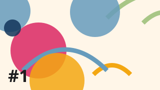
Episodio 1 programado
Dadaísmo
Movimiento surgido en Zúrich en 1916, en torno al Cabaret Voltaire, que cuestionó la lógica y las convenciones del arte.
Estreno: 27/10/2026 · 18:00 (GMT-3)
Serie de 12 episodios planeados que recorre movimientos del arte del siglo XX hasta hoy. Los episodios 1 y 2 ya están hechos y programados; el resto está en producción.
Las ilustraciones de esta página son composiciones abstractas propias del sitio, no reproducciones de obras.

Episodio 1 programado
Movimiento surgido en Zúrich en 1916, en torno al Cabaret Voltaire, que cuestionó la lógica y las convenciones del arte.
Estreno: 27/10/2026 · 18:00 (GMT-3)
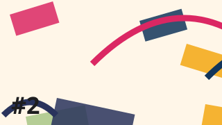
Episodio 2 programado
Movimiento iniciado en París en 1924 con el primer Manifiesto de André Breton; exploró los sueños y el inconsciente.
Estreno: 28/10/2026 · 18:00 (GMT-3)
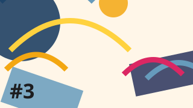
Episodio 3 pendiente
Movimiento italiano lanzado en 1909 con el manifiesto de Filippo Tommaso Marinetti, fascinado por la velocidad y la máquina.
Pendiente de producción.
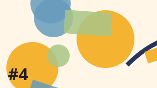
Episodio 4 pendiente
Corriente rusa de la década de 1910-1920 que unió arte, geometría, materiales industriales y diseño.
Pendiente de producción.
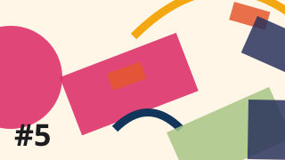
Episodio 5 pendiente
Pintura de posguerra centrada en Nueva York (décadas de 1940-1950), con gesto, color y gran formato.
Pendiente de producción.
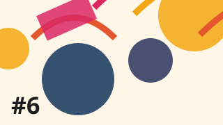
Episodio 6 pendiente
Obras que se mueven de verdad o que generan ilusión de movimiento con patrones ópticos.
Pendiente de producción.
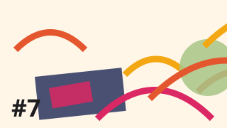
Episodio 7 pendiente
Arte de las décadas de 1950-1960 que tomó imágenes de la publicidad, los cómics y el consumo masivo.
Pendiente de producción.
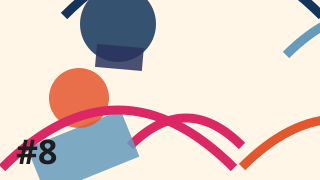
Episodio 8 pendiente
Prácticas de las décadas de 1960-1970 donde la idea, la acción o la instrucción importan más que el objeto.
Pendiente de producción.
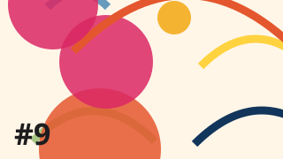
Episodio 9 pendiente
Uso del video y la televisión como medio artístico a partir de la década de 1960.
Pendiente de producción.
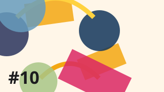
Episodio 10 pendiente
Obras hechas en el paisaje y con materiales de la naturaleza, desde fines de la década de 1960.
Pendiente de producción.
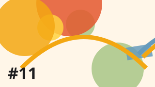
Episodio 11 pendiente
Obras creadas con reglas, algoritmos y computadoras, desde los primeros gráficos por computadora de la década de 1960.
Pendiente de producción.
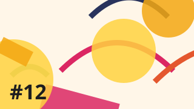
Episodio 12 pendiente
Prácticas recientes que usan sistemas de inteligencia artificial como herramienta o tema de la obra.
Pendiente de producción.